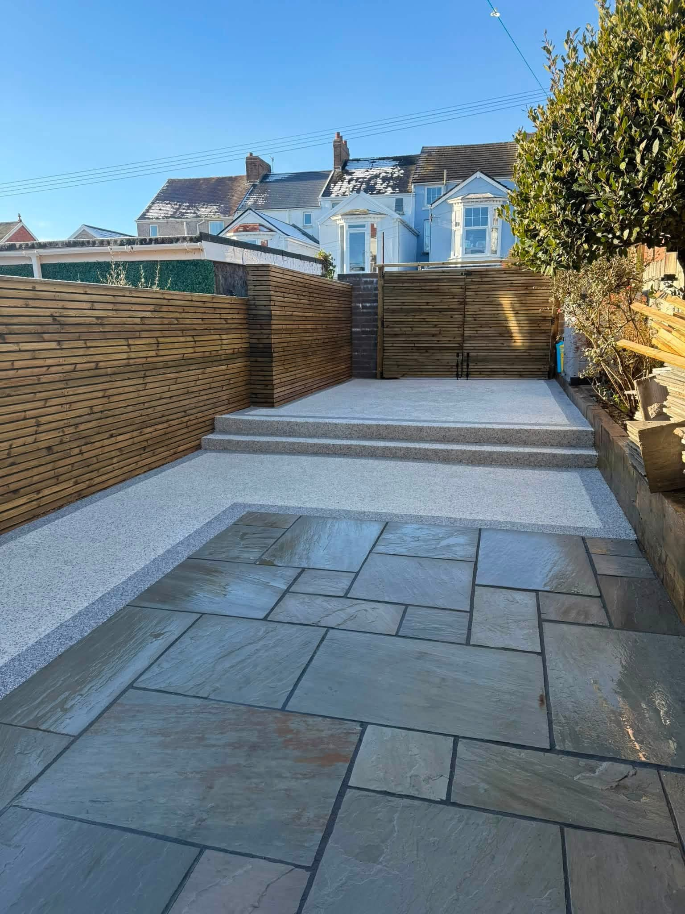
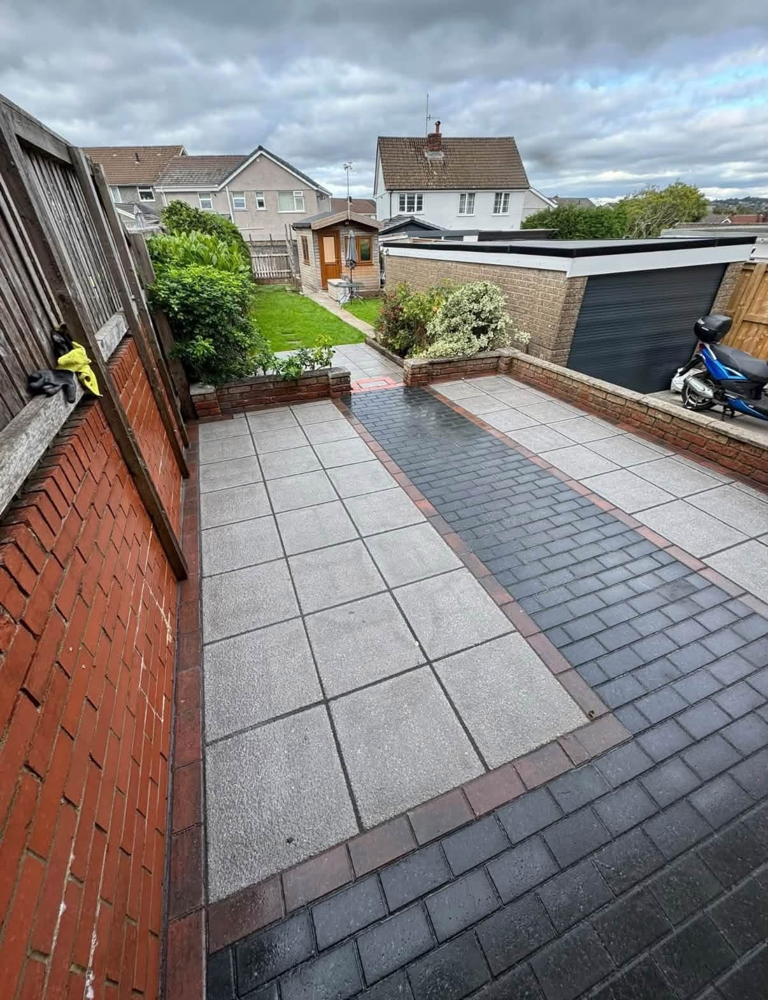
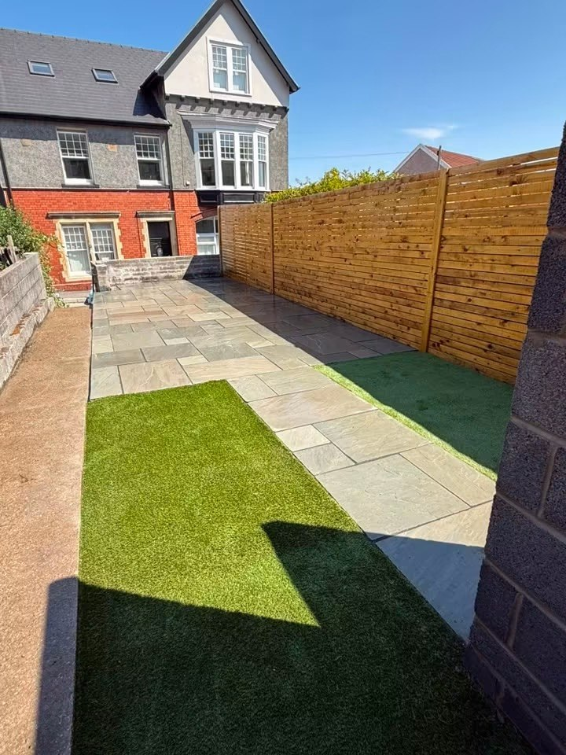
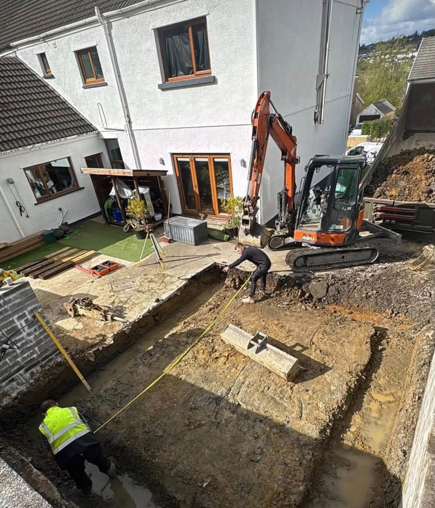
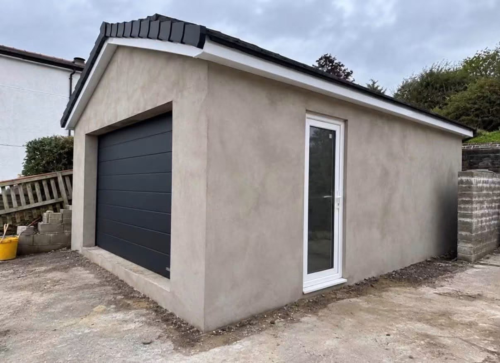
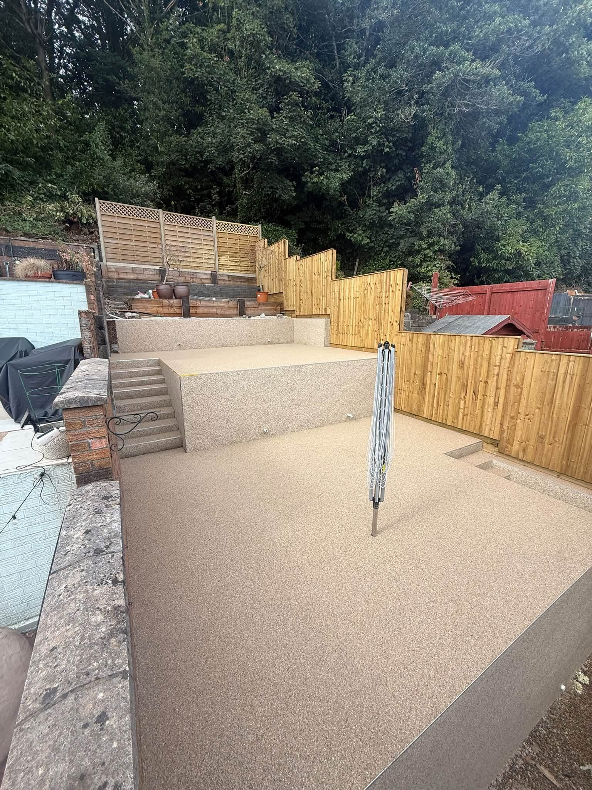
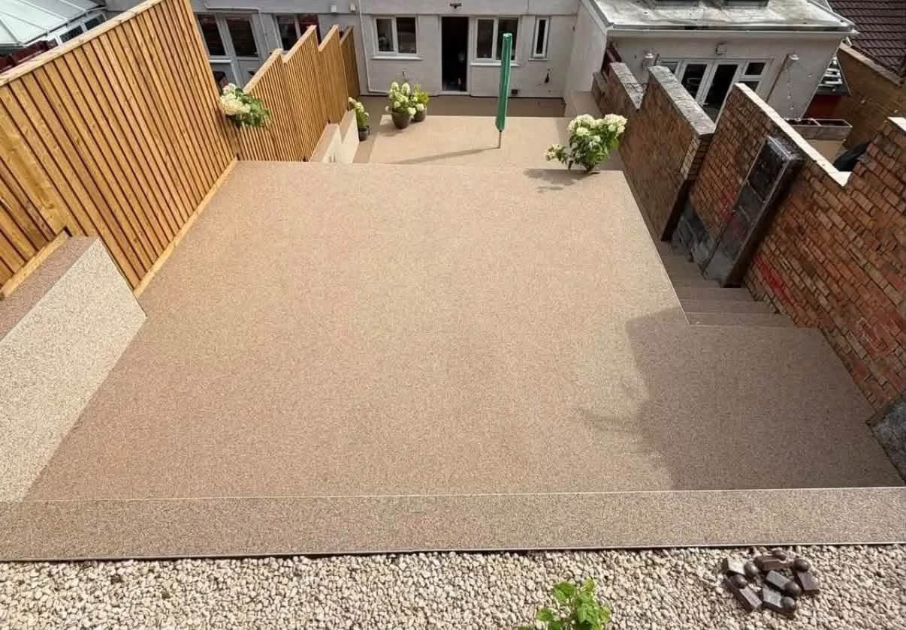

Garden Projects & Fencing in Swansea
Garden Projects & Fencing in Swansea
Gardens work best when paths, seating and boundaries connect in a useful layout. The R&R Building & Groundworks portfolio includes timber fencing, lawn areas, garden paths and stepped terraces, with work based around Swansea.
Think about the whole garden
Share how you want to use the space and the features you want to keep. Explain any privacy, access or layout changes you have in mind, and include photos of the boundaries and routes around the garden.
Connect fencing with the finished space
Recent work shows horizontal timber fencing beside paved and textured surfaces, along with a path next to lawn. Describe the fencing and garden work together so R&R can discuss the full scope.
Request a quote →

Driveways & Patios & surfaces
From groundwork to a finished structure.
The portfolio includes excavation and a completed detached outbuilding. Discuss your project, access and the surrounding outdoor work with R&R.
Discuss your project →

RECENT WORK
Garden Projects & Fencing in Swansea in pictures.
Garden projects and timber fencing in Swansea. R&R Building & Groundworks portfolio includes lawns, paths, terraces and horizontal timber boundaries.


Swansea
Swansea building and outdoor projects.
R&R Building & Groundworks is based in Swansea. Contact the business with your location, plans and photos to discuss the work you have in mind.
Building work, groundwork, driveways and garden projects.
See completed surfaces and work during construction.
Call, email or send your enquiry through WhatsApp.
GOOD TO KNOW
Your questions answered.
Do the photographs show timber fencing?
Yes. The portfolio includes horizontal timber boundaries and fencing around outdoor seating areas.
Can I discuss paths and garden levels?
The projects show paved routes and stepped outdoor spaces. Include the existing levels and access in your message.
Where do you work?
R&R Building is based in Swansea. Share the property postcode to confirm the project location.
REQUEST A QUOTE
Tell us what you have in mind.
Send the details of your project and its location. WhatsApp opens with your enquiry ready to send, where you can also attach photos.
R&R Building & Groundworks
Ready to discuss your project?
Swansea